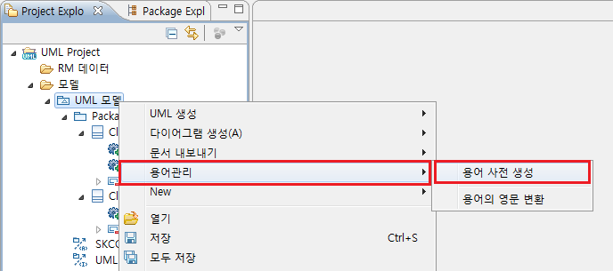
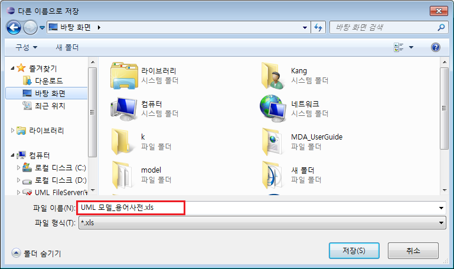
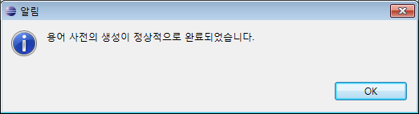
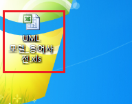
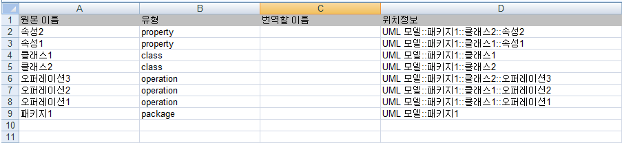
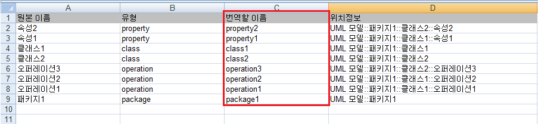
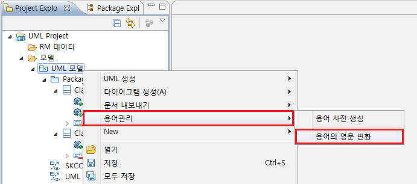
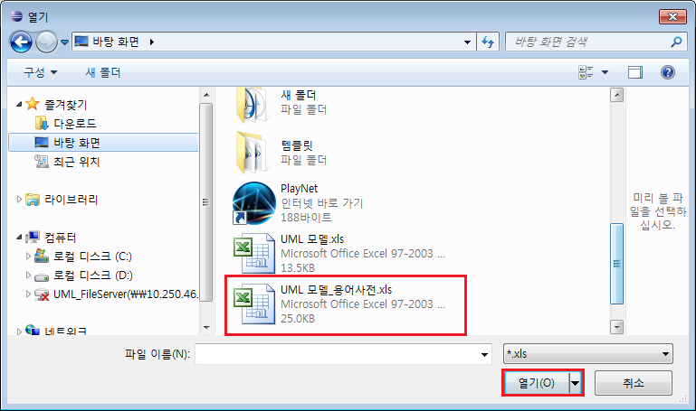
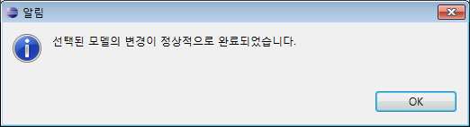
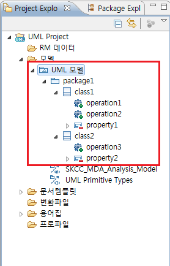

1. 용어 관리
1.1 용어 사전 생성
용어 사전 생성의 실행은 UML 모델에서 마우스 오른쪽 클릭 후 [용어관리] > [용어 사전 생성] 입니다.

<그림 1. 용어 사전 생성 메뉴>
용어 사전 생성을 실행하면 아래와 같이 용어 사전을 저장할 위치를 설정하는 다이얼로그가 나타납니다. 저장할 위치를 설정한 후 [저장] 버튼을 선택합니다.

<그림 2. 용어 사전 저장위치 설정 화면>
생성되는 용어 사전은 기본적으로 [UML 모델_용어사전.xls] 라는 이름과 확장자를 가지고 생성됩니다. 사용자가 원하는 이름으로 변경이 가능합니다.

<그림 3. 용어 사전 생성 완료 메시지>

<그림 4. 생성된 용어 사전 1/2>
엑셀 문서로 출력된 용어 사전을 열게 되면 아래의 그림과 같이 원본 이름, 유형, 번역할 이름, 위치정보 4개의 칼럼을 갖는 용어 사전을 볼 수 있습니다.

<그림 5. 생성된 용어 사전 2/2>
여기에서 [번역할 이름] 칼럼에 변환을 원하는 이름을 입력하면 됩니다. 이 값은 단락 1.2 용어의 영문 변환에서 설명할 [용어의 영문 변환]에서 사용됩니다.

<그림 6. 번역할 이름 작성>
1.2 용어의 영문 변환
용어 사전 생성이 완료되었고 용어 사전 내부에 [번역할 이름]이 작성되었다면, 이제 생성한 용어 사전을 기반으로 용어의 영문 변환을 실행할 수 있습니다. 용어의 영문 변환 실행은 UML 모델에서 마우스 오른쪽 클릭 후 [용어관리] > [용어의 영문 변환] 입니다.

<그림 7. 용어의 영문 변환 실행>
용어의 영문 변환은 용어 사전에 정의된 [번역할 이름]을 가지고 진행됩니다. 따라서 기능을 실행하게 되면 다음과 같이 영문 변환에 사용할 용어 사전을 선택하는 다이얼로그가 나타나게 됩니다. 영문 변환에 사용할 용어 사전 엑셀 파일을 선택한 후 [열기] 버튼을 선택합니다.

<그림 8. 용어 사전 선택 다이얼로그>

<그림 9. 용어의 영문 변환 성공 메시지>
용어의 영문 변환이 성공하면 용어 사전에 정의한 [번역할 이름]의 이름들이 각 UML 요소의 이름으로 변환되었음을 확인할 수 있습니다.

<그림 10. 용어의 영문 변환 후>